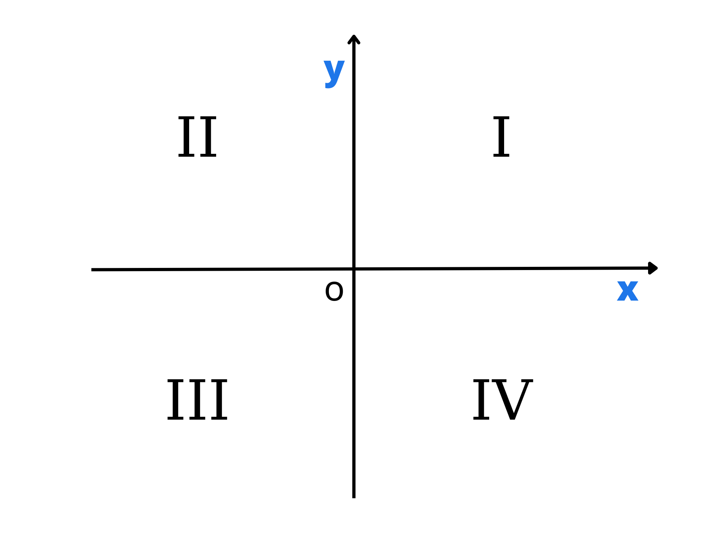
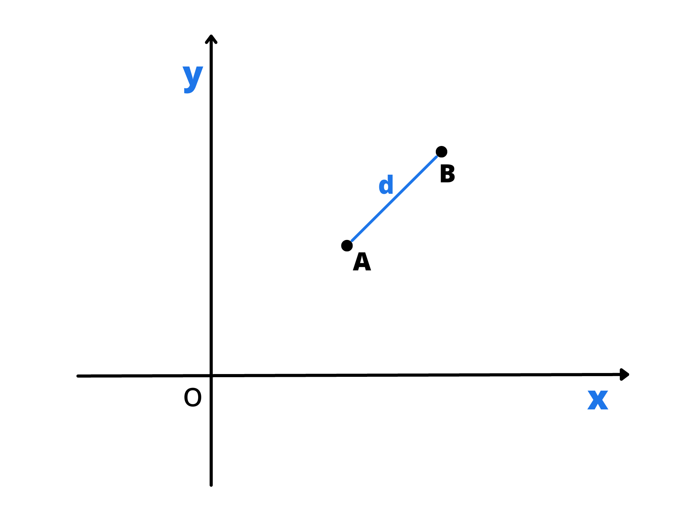
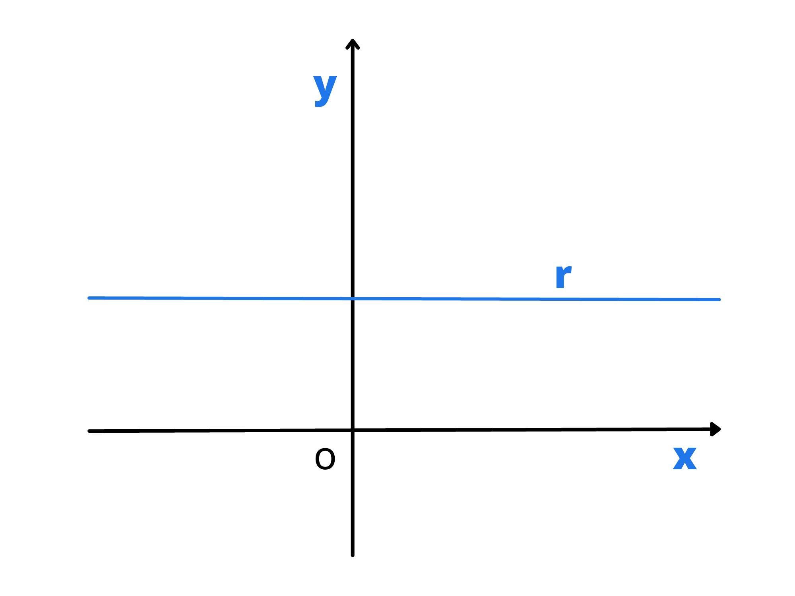

Piano cartesiano e rette
Di seguito analizzeremo le rette sul piano certesiano.
Cos'è il piano cartesiano?
Prima di iniziare con lo studio delle rette analizziamo il piano cartesiano. Il piano cartesiano è uno strumento che ci permette di descrivere la posizione di oggetti in uno spazio geometrico a due dimensioni. Sono presenti due rette, chiamate assi, che si incontrano in un punto chiamato origine. La retta orizzontale si chiama asse delle \(x\) (o asse delle ascisse) e quella verticale si chiama asse delle \(y\) (o asse delle ordinate). Gli assi sono orientati e su essi è fissata un’unità di misura. L’origine corrisponde a \(0\) e su essi è possibile inserire ogni numero reale.
Prendiamo un punto \(A\) nel piano e tracciamo le rette parallele agli assi. Chiamiamo con \(x_A\) il punto di intersezione di una retta con l’asse delle ascisse e con \(y_A\) il punto di intersezione dell’altra retta con l’asse delle ordinate.
Chiamiamo quindi \(x_A\) ascissa e \(y_A\) ordinata di \(A\) e diciamo che \(A\) ha coordinate \(x_A\) e \(y_A\). Possiamo anche utilizzare la notazione \(A(x_A,y_A)\) che si legge \(A\) ha coordinate \(x_A\) e \(y_A\). Notiamo che l’ascissa va scritta sempre prima dell’ordinata.
Gli assi dividono il piano in \(4\) parti infinite chiamate quadranti come in figura. Notiamo che se un punto del piano si trova
-
nel primo quadrante ha ascissa e ordinata positiva \((+,+)\),
-
nel secondo quadrante ha ascissa negativa e ordinata positiva \((-,+)\),
-
nel terzo quadrante ha ascissa e ordinata negativa \((-,-)\),
-
nel quarto quadrante ha ascissa positiva e ordinata negativa \((+,-)\).
Distanza fra due punti e punto medio
Analizziamo come si trova la distanza fra due punti nel piano cartesiano. Partiamo da un caso particolare in cui le ascisse dei due punti sono uguali. Prendiamo quindi due punti con ascissa uguale \(A(x, y_A)\) e \(B(x, y_B)\).
Siccome stanno sulla stessa retta orizzontale, la distanza fra i due punti sarà la differenza tra le loro ordinate. Attenzione però, la distanza è una quantità sempre positiva! Per questo bisogna prendere il valore assoluto. Quindi la formula è
\(d(A, B)=|y_A-y_B|\)
Per lo stesso identico ragionamento, se abbiamo due punti con la stessa ordinata \(A(x_A,y)\) e \(B(x_B;y)\), la loro distanza sarà il valore assoluto della differenza delle loro ascisse:
\(d(A,B)=|x_A-x_B|\)
Analizzimo ora il caso generale di due generici punti \(A(x_A,y_A)\) e \(B(x_B,y_B)\). Per prima cosa, tracciamo le parallele all’asse \(x\) e all’asse \(y\) che partono dai due punti. Notiamo che si forma un triangolo rettangolo. Uno dei suoi cateti è uguale alla differenza delle \(x\) mentre l’altro alla differenza delle \(x\). Quindi possiamo usare il teorema di Pitagora per trovare la distanza tra i due punti:
\(AB=\sqrt{(x_A-x_B)^2+(y_A-y_B)^2}\)
Notiamo che questa volta non ci dobbiamo preoccupare del segno della differenza perché elevando al quadrato le differenze diventa comunque tutto positivo.
Un'ultima formula che è utile conoscere è quella che determina le coordinate del punto medio di un segmento nel piano cartesiano. Essa è
$$ M\bigg(\frac{x_A+x_B}{2},\frac{y_A+y_B}{2} \bigg) $$
dove \(A(x_A,y_A)\) e \(B(x_B,y_B)\) sono le coordinate dei due estremi del segmento.
Rette: introduzione
Un’equazione nelle incognite \(x\) e \(y\) del tipo \(ax+by+c=0\) è un’equazione di primo grado sia rispetto alla \(x\) sia rispetto alla \(y\). Chiamiamo ogni equazione di questo tipo equazione lineare a due incognite. Le soluzioni di questo tipo di equazioni sono tutte le coppie di valori reali \(x,y\) che la verificano.
Esempio: Nell'equazione \(2x-3y+1=0\) una possibile coppia di soluzioni potrebbe essere \((x,y)=(1,1)\) perché \(2\cdot1-3\cdot1+1=0\) è vero. Possiamo notare però che questa non è l'unica. Infatti, per fare qualche esempio, le coppie \((4,3)\) e \((-2,-1)\) sono anch'esse soluzioni dell'equazione.
Con un po' di intuizione possiamo dedurre che le soluzioni di un'equazione di questo tipo sono infinite e per ottenerle basta sostituire alla \(x\) un qualsiasi valore in modo da ottenere il corrispondente valore di \(y\).
A ogni coppia di soluzioni di un'equazione lineare a due incognite corrisponde un punto sul piano cartesiano. Si può dimostrare che l'insieme di tutte le soluzioni di un'equazione di questo tipo, rappresentato graficamente, corrisponda a una retta. Possiamo quindi afferamare che
\(ax+by+c=0\) con \(a\) e \(b\) \( \neq 0\)
è l'equazione generica che, al variare di \(a\), di \(b\) e di \(c\), rappresenta tutte le rette del piano cartesiano. Essa viene detta equazione della retta in forma implicita.
Trovata questa formula importante abbiamo le basi per iniziare lo studio delle rette. Per iniziare analizziamo alcuni casi di rette particolari sul piano cartesiano.
Rette particolari
1.Retta parallela all'asse delle ascisse
Analizziamo, come prima cosa, il caso di una retta parallela all'asse delle \(x\). Prendiamo una qualsiasi retta di questo tipo e chiamiamo con \(k\) il punto di intersezione della retta con l'asse delle \(y\). Notiamo che tutti i punti della retta hanno la stessa ordinata e che quindi hanno coordinate \(P(x_P, k)\), con \(x_P\) variabile e \(k\) costante. Per questo possiamo dire che l'equazione di una generica retta parallela all'asse delle ascisse è
\(y=k\)
in quanto è l'insieme di tutti e soli i punti che hanno ordinata \(k\) (e ascissa variabile).
Notiamo che si può giungere a questa conclusione anche ponendo \(a=0\) e \(b\neq0\) nell'equazione implicita delle rette che abbiamo visto in precedenza. Infatti l'equazione \(ax+by+c=0\) diventa
\(\begin{align} by+c=0 \longrightarrow y=-\frac{c}{b}\end{align}\).
Se poniamo \(\begin{align} -\frac{c}{b}=k \end{align}\), il che si può fare visto che stiamo parlando di numeri, otteniamo \(y=k\).
Notiamo infine che se \(k=0\) la retta che otteniamo coincide con quella dell'asse \(x\) che quindi ha equazione
\(y=0\)
2.Retta parallela all'asse delle ordinate
Analogamente possiamo procedere per ricavare la formula generale delle rette parallele all'asse delle \(y\). Prendiamo anche in questo caso una retta di questo tipo e chiamiamo con \(h\) il punto di intersezione della retta con l'asse delle \(x\). Notiamo che tutti i punti della retta hanno la stessa ascissa e che quindi hanno coordinate \(P(h, y_P)\), con \(h\) costante e \(y_P\) variabile. Per questo possiamo dire che l'equazione generica di una retta parallela all'asse \(y\) è
\(x=h\)
In quanto è l'insieme di tutti e soli i punti ascissa uguale a \(h\) (e ordinata variabile).

Notiamo che si può giungere a questa conclusione anche ponendo \(a\neq0\) e \(b=0\) nell'equazione implicita delle rette che abbiamo visto in precedenza. Infatti l'equazione \(ax+by+c=0\) diventa
\(\begin{align}ax+c=0 \longrightarrow x=-\frac{c}{a}\end{align}\).
Ora, se poniamo \(\begin{align} -\frac{c}{a}=h \end{align}\), otteniamo \(x=h\).
Notiamo infine che se \(h=0\) la retta che otteniamo coincide con quella dell'asse \(y\) che quindi ha equazione
\(x=0\)
3.Retta passante per l'origine
Ricordiamo che l'equazione di una qualsiasi retta in forma implicita è \(ax+by+c=0\). Se poniamo \(c=0\) l'equazione diventa

\(ax+by=0\). Esplicitando la \(y\) otteniamo \(\begin{align}y=-\frac{a}{b}x\end{align}\).
Se poniamo \(\begin{align}-\frac{a}{b}=m\end{align}\), ricaviamo l'equazione \(y=mx\) che rappresenta una retta passante per l'origine nel piano cartesiano.
Per convincerci della sua veridicità, proviamo a rappresentare l'equazione \(y=3x\) sul piano cartesiano. Per farlo compiliamo una tabella con i valori di \(x\) e \(y\):

Nell'equazione \(y=mx\) chiamiamo \(m\) coefficiente angolare dell'equazione. Esso è un dato molto importante in quanto determina l'inclinazione della retta sul piano cartesiano. Isolando la \(m\), otteniamo l'equazione
\(\begin{align}m=\frac{y}{x}\end{align}\).
Notiamo che il coefficiente angolare è il rapporto tra l'ordinata e l'ascissa di un punto di una retta. Questo rapporto rimane sempre costante per ogni punto della retta e quindi possiamo affermare che il coefficiente angolare è unico e costante per ogni retta. Questa è una delle caratteristiche più importanti che permette di distinguere una retta da un'altra.
Retta generica non parallela all'asse delle y
Se nell'equazione generale della retta \(ax+by+c=0\) esplicitiamo la variabile \(y\) otteniamo:
\(\begin{align}by=-ax-c \xrightarrow{b\neq0}\quad y= -\frac{a}{b}x-\frac{c}{b}.\end{align}\)
Considerando \(b\neq0\) escludiamo nell'equazione generale il caso in cui \(ax+c=0\) che, se ci ricordiamo quanto detto nei paragrafi precedenti, rappresenta la retta con asse parallelo all'asse \(y\).
Poniamo \(\begin{align}-\frac{a}{b}=m\end{align}\) e \(\begin{align}-\frac{c}{b}=q\end{align}\) e scriviamo \(y=mx+q\) che viene detta equazione della retta in forma esplicita.
dove \(m\) è il coefficiente angolare della retta e \(q\) il termine noto che graficamente sul piano cartesiano rappresenta il punto di intersezione della retta con l'asse delle \(y\).

Essa, come abbiamo già accennato precedentemente, a differenza dell'equazione in forma implicita non rappresenta tutte le rette del piano. Infatti sono da escludere le rette parallele all'asse delle ordinate in quanto non esiste nessun valore di \(m\) corrispondente.
Retta passante per due punti
Un noto postulato della geometria afferma che per due punti passa una sola retta. Supponendo vero questo, se abbiamo due punti, ci sarà una sola retta che passa per essi e quindi ci dovrà essere un modo per risalire alla sua equazione.

Supponiamo dunque di avere due punti \(\begin{align}P(x_P,y_P)\end{align}\) e \(T(x_T,y_T)\), sapendo che appartengono alla retta, devono verificare la sua equazione. Quindi:
\(\begin{cases} y_P = mx_P+q\\ y_T =mx_T+q\end{cases} \)
Notiamo che il coefficiente angolare e il termine noto sono uguali in quanto stiamo parlando della stessa retta. Infatti \(m\) e \(q\) sono le uniche incognite del sistema in quanto gli altri sono coefficienti e corrispondono alle coordinate dei due punti, che noi abbiamo.
Se sottraiamo la seconda equazione alla prima la variabile scompare e dunque otteniamo:
\(y_P - y_T = mx_P - mx_T\)
L'unica incognita che abbiamo è il coefficiente angolare, e quindi ci basta isolarlo per trovare una formula più pulita
\(\begin{align}m ={y_P - y_T \over x_P- x_T}\end{align}\)
Questa è la formula che ci permette di trovare il coefficiente angolare di una retta partendo da due suoi punti. Molto spesso, vista la sua importanza, si richiede di impararla a memoria.
Adesso non ci serve altro che trovare una formula per \(m\). Per farlo basta sostituire \(m\) in una delle \(2\) equazioni del sistema:
\(\begin{align}y_P = {(y_P-y_T) \cdot x_P \over (x_P-x_T) + q}\end{align}\)
Quindi portando tutto dallo stesso lato ed allo stesso denominatore:
\(\begin{align}q= {y_P(x_P - x_T) - x_P(y_P-y_T) \over x_P -x_T} \end{align}\)
\(\begin{align}q = {x_Py_T - y_Px_T \over x_P-x_T}\end{align}\)
Come si può notare è una formula abbastanza complicata da ricoradare. Di solito si evita di impararla a memoria e si decide di studiare solo quella per trovare \(m\). Infatti, una volta che si conosce \(m\) si può sostituire direttamente il suo valore numerico nell'equazione precedente
\(\begin{align}y_P = mx_P + q \longrightarrow q = y_P - mx_P \end{align}\)
per trovare il valore numerico di \(q\)
Posizione reciproca tra due rette
Due rette \(r\) e \(t\) possono essere incidenti, parallele e distinte o coincidenti. Nelle prossime sezioni analizzeremo approfonditamente ogni caso.
1. Rette incidenti
Geoemetricamente, due rette si dicono incidenti se si incotrano in uno stesso punto che viene chiamato punto di intersezione. Per capire se le due rette sono incidenti bisogna analizzare il loro coefficiente angolare: se è diverso le rette avranno inclinazione diversa e quindi si incontreranno in un punto.
Per trovare il punto di intersezione partendo dalle due equazioni dobbiamo fare un sistema tra le due rette e porre uguale in entrambe le equazioni la \(x\) e la \(y\). Facendo ciò otteremo un sistema a due incognite facilmente risolvibile
\(\begin{cases} y = m_1 x + q_1 \\ y = m_2 x + q_2 \end{cases}\)
Esempio: Date le due rette \(2x+y-2=0\) e \(3x-y-3=0\) verificare che esse siano incidenti e trovare il loro punto di intersezione
Per prima cosa dobbiamo verificare che esse siano incidenti. Per farlo troviamo il coefficiente angolare di entrambe le rette esplicitandole:
\(2x+y-2=0 \longrightarrow y= -2x+2\) quindi \(m_1=-2\)
\(3x-y-3=0 \longrightarrow y=3x-3\) quindi \(m_2=3\)
Notiamo che le rette sono incidenti perché \(m_1 \neq m_2\). Per trovare il loro punto di intersezione \(P\) risolviamo il sistema formato dalle loro equazioni, ad esempio con il metodo del confronto:
\(\begin{cases} 2x+y-2=0 \\ 3x-y-3=0 \end{cases} \longrightarrow\) \(\begin{cases} y=-2x+2 \\ y=3x-3 \end{cases}\)
\(\begin{cases} -2x+2=3x-3 \\ y=3x-3 \end{cases} \longrightarrow\) \(\begin{cases} x=1 \\ y=0 \end{cases}\)
Quindi \(P(1,0)\)
2. Rette parallele
Geoemetricamente, due rette si dicono parallele se non hanno alcun punto in comune. Per capire se due rette sono parallele bisogna analizzare il loro coefficiente angolare: se è identico significa che le rette hanno la stessa inclinazione e quindi che non si incontreranno mai.
Esempio: Date le due rette \(4x-3y+2=0\) e \(8x-6y+3=0\), verificare che sono parallele.
Analizziamo per prima cosa il coefficiente angolare delle due rette ponendole in forma esplicita:
\(\begin{align}4x-3y+2=0\end{align}\) \(\longrightarrow\begin{align}y=\frac{4}{3}x+\frac{2}{3}\end{align}\)
\(8x-6y+3=0\) \(\longrightarrow\begin{align}y=\frac{4}{3}x+\frac{1}{2}\end{align}\)
Notiamo che le due rette hanno lo stesso coefficiente angolare e che quindi sono parallele.
Un caso particolare di rette parallele è quello delle rette coincidenti. Infatti, se hanno sia lo stesso coefficiente angolare sia lo stesso termine noto, avremo due rette uguali. Rette di questo tipo hanno tutti gli infiniti punti in comune.
Esempio: Date le due rette \(x+3y-4=0\) e \(2x+6y-8\), verificare che esse siano coincidenti.
Anche in questo caso, analizziamo il coefficiente angolare e il termine noto di entrambe le equazioni: se sono uguali allora le rette saranno coincidenti:
\(x+3y-4=0\)\(\longrightarrow\begin{align}y=-\frac{1}{3}x+\frac{4}{3}\end{align}\)
\(2x+6y-8=0\)\(\longrightarrow\begin{align}y=-\frac{1}{3}x+\frac{4}{3}\end{align}\)
Le rette hanno \(m_1=m_2\) e \(q_1=q_2\) e quindi sono uguali. Notiamo che potevamo arrivare alla stessa soluzione moltiplicando per \(2\) entrambi i membri della prima equazione, ottenendo la seconda.